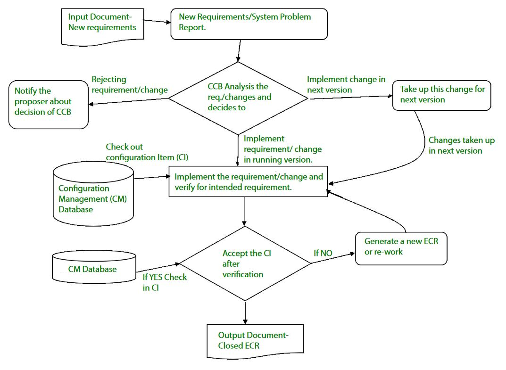

9.7 System Configuration Management
System Configuration Management is the integrated application of all SCM activities at the system level — controlling the entire software system's configuration throughout its lifecycle. Whenever software is built, there is always scope for improvement, and those improvements require controlled changes. System SCM ensures that every change is analysed, recorded, reported, and controlled before it affects the product.

Why system-level SCM is needed
- Requirements keep changing — systems must be upgraded based on current needs to meet desired outputs.
- Changes must be analysed before implementation, recorded before they are applied, reported with before-and-after details, and controlled to improve quality and reduce errors.
- Without checked changes, modifications can undermine a well-run software project — SCM prevents this.
- System SCM is an essential part of all project management activities — not an optional add-on.
What system SCM manages
- Source code — all program files and scripts under version control.
- Documentation — requirements, design, test plans, user guides, release notes, and configuration guides.
- Executables and assets — compiled binaries, libraries, media files, and third-party components.
- Tools and environments — build systems, deployment configurations, and development environment settings.
- System SCM ensures the software is always in a known and stable state — every component is tracked and every change is auditable.
Integrated SCM processes at system level
- Identification and establishment: All system CIs are identified, related to each other, and baselined at milestones — see §9.2.
- Version control: All system components are versioned with a consistent numbering scheme; multiple release paths are managed — see §9.6.
- Change control: Every system change follows the formal CR → CCB → ECR process — see §9.5.
- Configuration auditing: System-wide audits verify that all components satisfy baseline requirements and that what is built matches what was specified.
- Reporting: Accurate configuration status is communicated to developers, testers, end users, and customers through admin guides, user guides, FAQs, release notes, and installation guides.
Benefits of system configuration management
- Effective bug tracking: Code modifications are linked to reported issues, making defect tracing accurate and auditable.
- Continuous integration and deployment: SCM integrates with CI/CD pipelines to automate build, test, and deployment of controlled releases.
- Risk management: Early detection and correction of configuration problems reduces the chance of critical flaws reaching production.
- Support for large projects: An orderly method for handling code changes across large, multi-team projects.
- Reproducibility: Exact versions of code, libraries, and dependencies are recorded so builds can be replicated in development, test, and production environments.
- Parallel development: Multiple developers collaborate on different branches simultaneously without corrupting the main codebase.
- Replication and distribution: Software systems can be replicated to customer sites, test labs, and production servers with confidence in configuration consistency.
- Team coordination: All stakeholders work from the same controlled configuration, reducing integration errors and miscommunication.
System SCM and software quality
- System SCM provides the infrastructure that SQA relies on — controlled baselines, traceable changes, and auditable records — see §8.2 SQA.
- SQA plans specify version control, baselines, and change control requirements as part of the quality system — see §8.4 SQA Plans.
- At CMM Level 2, Software Configuration Management is a key process area requiring formal procedures — see §3.10 CMM.
- Incremental and iterative development models rely on SCM to tag releases at each increment — see §2.8 Incremental Model.
Exam question — System Configuration Management
Q: What is System Configuration Management? Explain its role in project management and list its key benefits.
Model answer points:
- System SCM = integrated application of all SCM activities at whole-system level; essential part of project management.
- Changes must be analysed, recorded, reported, controlled before implementation.
- Manages: source code, documentation, executables, tools/environments.
- Integrated processes: identification, version control, change control, audit, reporting.
- Benefits: bug tracking, CI/CD, risk management, large-project support, reproducibility, parallel development, replication, team coordination.
- Links to SQA, SQA plans, CMM Level 2, incremental development.